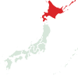

일본의 지역

홋카이도

도호쿠
아오모리
아키타
이와테
야마가타
미야기
후쿠시마

호쿠리쿠 신에쓰
니가타
도야마
이시카와
후쿠이
나가노

간토
도쿄
가나가와
지바
사이타마
이바라키
도치기
군마

도카이
야마나시
시즈오카
기후
아이치
미에

간사이
교토
오사카
시가
효고
나라
와카야마

주고쿠
돗토리
시마네
오카야마
히로시마
야마구치

시코쿠
도쿠시마
가가와
에히메
고치

규슈
후쿠오카
사가
나가사키
오이타
구마모토
미야자키
가고시마

오키나와